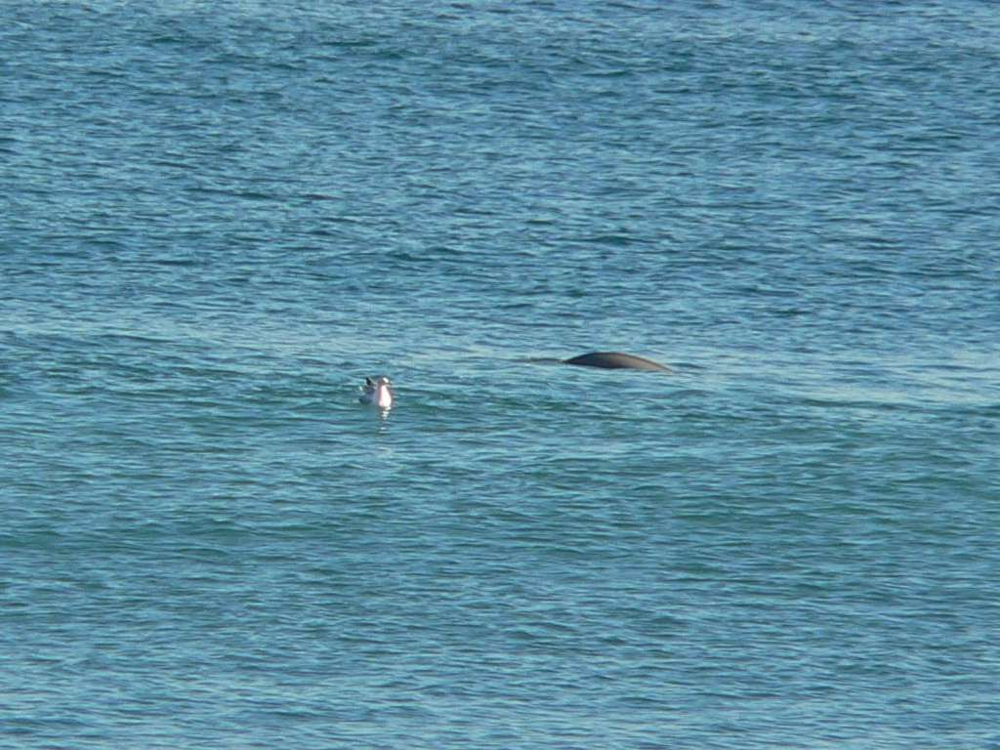

四季折々
カモちゃん
カモちゃん
冬になると野生のアザラシが鴨川の海岸に現れるようになって
数年が経ちます。多摩川などに現れたアザラシは
その後，姿を消してしまいましたが，
カモちゃんはよっぽどこの海岸が気に入ったのか，
今年も現れたと新聞で報じられました。
冬になると野生のアザラシが鴨川の海岸に現れるようになって 数年が経ちます。多摩川などに現れたアザラシは その後，姿を消してしまいましたが， カモちゃんはよっぽどこの海岸が気に入ったのか， 今年も現れたと新聞で報じられました。

最初に現れたときのカモちゃんです。
撮影: 04/03/31

２回目に現れたカモちゃんです。
撮影: 05/03/30
下の画像は 05/12/28 の撮影です。
海岸から150m ほどのところを泳いでいました。
左はカモメで，右にアザラシの胴体の一部が写っています。
写真には撮れませんでしたが，顔を覗かせた瞬間もありました。
更に，泳いでいたアザラシですが，１頭ではなく２頭なのです。
残念ながら写真を撮ることは出来ませんでしたが，
２頭が同時に背中を見せたり，息継ぎをしたりしていました。
ひょっとすると，今回はお嫁さんを連れて来たのでしょうか (^^)。
下の画像は 05/12/28 の撮影です。 海岸から150m ほどのところを泳いでいました。 左はカモメで，右にアザラシの胴体の一部が写っています。 写真には撮れませんでしたが，顔を覗かせた瞬間もありました。
更に，泳いでいたアザラシですが，１頭ではなく２頭なのです。 残念ながら写真を撮ることは出来ませんでしたが， ２頭が同時に背中を見せたり，息継ぎをしたりしていました。 ひょっとすると，今回はお嫁さんを連れて来たのでしょうか (^^)。
